DVO PARUSSKI, MVO: TVShows, Jaskier, Ultradox, DVO ColdFilm, MVO Who Studios или Original (ENG) Субтитры: Русские {Jaskier} и Английские | 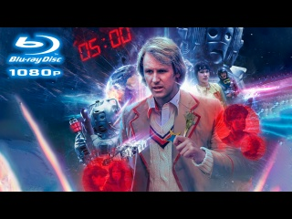 |
|---|---|
с обновленными спецэффектами DVO PARUSSKI, MVO: TVShows, Jaskier, Ultradox, DVO ColdFilm, MVO Who Studios или Original (ENG) Субтитры: Русские {Jaskier} и Английские | 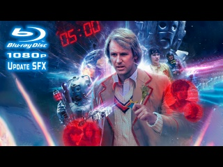 |
с обновлением визуальных эффектов (cunningmunki) DVO PARUSSKI, MVO: TVShows, Jaskier, Ultradox, DVO ColdFilm, MVO Who Studios или Original (ENG) Субтитры: отсутствуют | 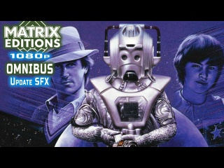 |
MVO: TVShows, Jaskier, Ultradox, DVO ColdFilm или Original (ENG) Субтитры: Русские {Jaskier} и Английские | 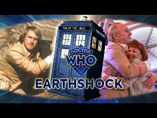 |
Earthshock
Дата выхода: 8-16 марта 1982
Формат: 4 эпизода по 25 мин.
| | |
ТАРДИС материализуется в пещерах на Земле XXVI века, где военные обвиняют путешественников в гибели экспедиции. За всем стоят киберлюди, вернувшиеся после долгого отсутствия, — и их план грозит Земле катастрофой. Возвращение киберлюдей держали в строжайшем секрете: Radio Times не разрешили фотосессию, все съёмки шли в павильонах. Финальные титры прошли в тишине — без музыки, на фоне разбитого значка Адрика за математические достижения. Первая смерть спутника за всю историю сериала. Эрик Савард написал этот сценарий взамен отменённого «Враг внутри» Кристофера Приста — амбициозной истории, где Доктор столкнулся бы с источником силы самой ТАРДИС. А реквизит кибер-сканера собрали из деталей декораций фильма «Чужой».
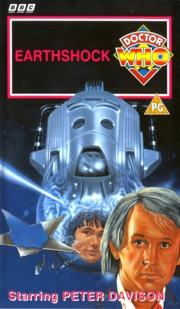 VHS - сентябрь 1992 | 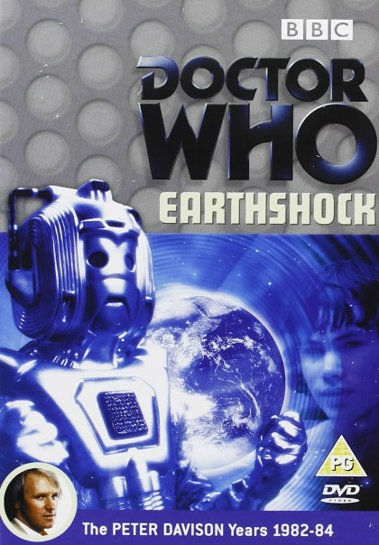 DVD - 18 августа 2003 |  Blu-ray - 10 декабря 2018 * Версия в нашей группе |
|---|
 В 2023 году вышел сериал, где спутники доктора вспоминают свои приключения в консольной комнате "ТАРДИС воспоминаний". По сути идет полный повтор старых серий со вставками постаревших актеров в начале и в конце. В 2023 году вышел сериал, где спутники доктора вспоминают свои приключения в консольной комнате "ТАРДИС воспоминаний". По сути идет полный повтор старых серий со вставками постаревших актеров в начале и в конце.В "Историях ТАРДИС" эта серия является ПЕРВОЙ! |
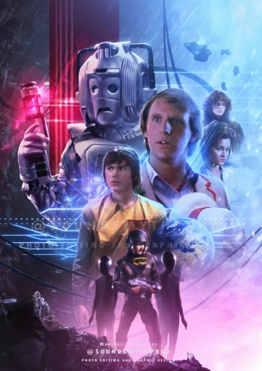
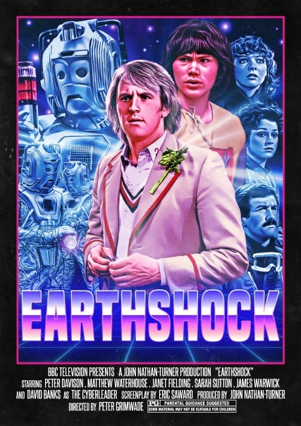
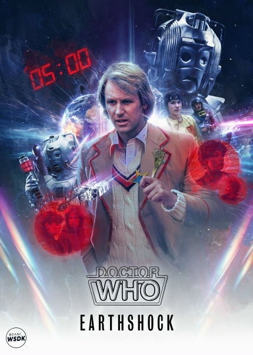
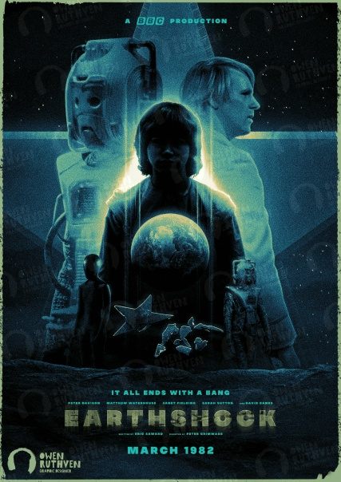
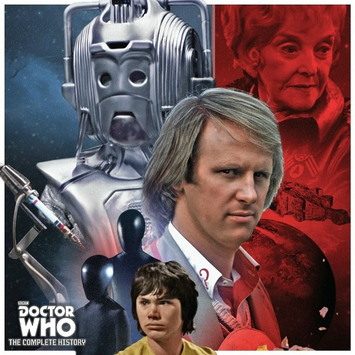
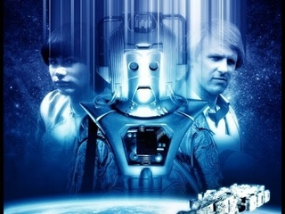